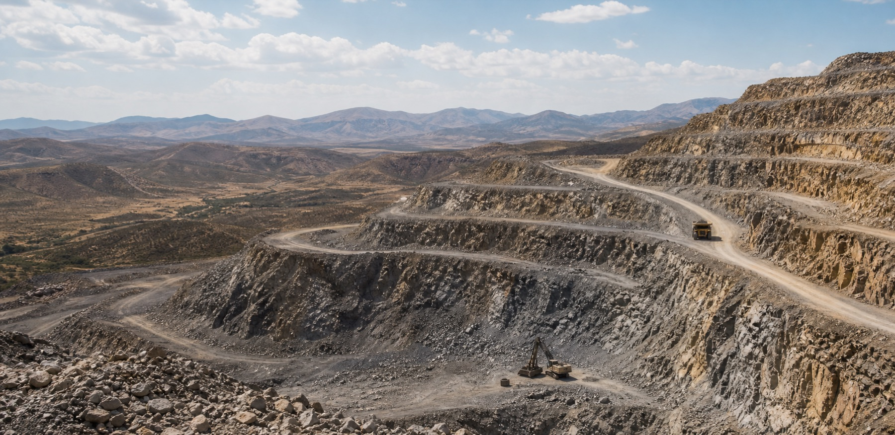
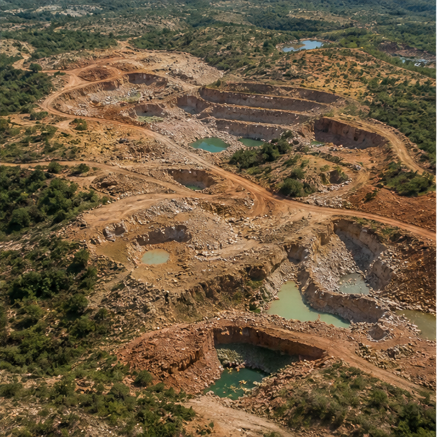
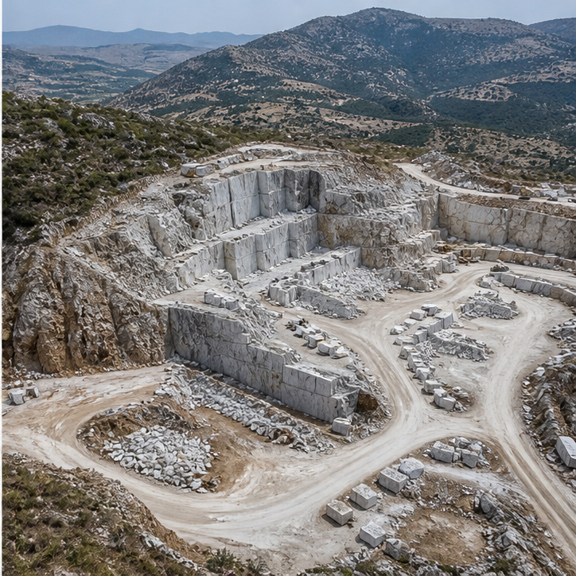

Kono Belt
Sierra Leone diamond and gemstone recovery zone known for material with strong commercial relevance and origin value.

Our Mines
Each site is evaluated for geological promise, responsible operating standards, and the long-view quality of its output. Our interest is not only in what a mine can produce today, but in whether it can support repeatable quality, credible documentation, and a responsible operating narrative over time.
Sierra Leone diamond and gemstone recovery zone known for material with strong commercial relevance and origin value.

Emerging colored stone field supported by controlled extraction plans, measured survey work, and long-horizon development thinking.

Selective output reserve with a focus on grading-ready material, cleaner handling, and consistent downstream quality.